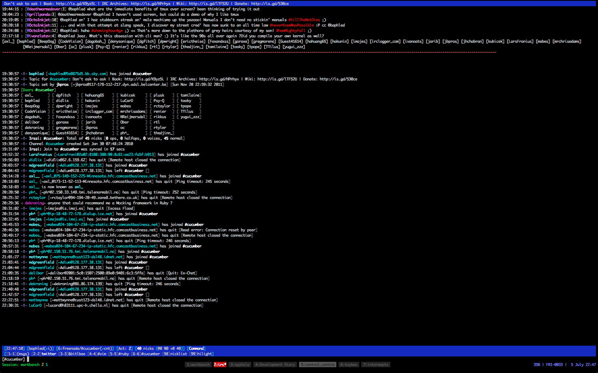
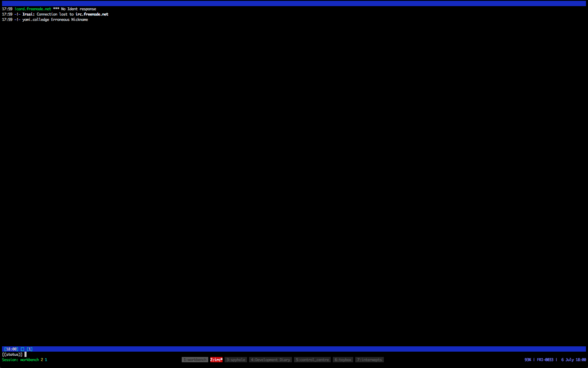
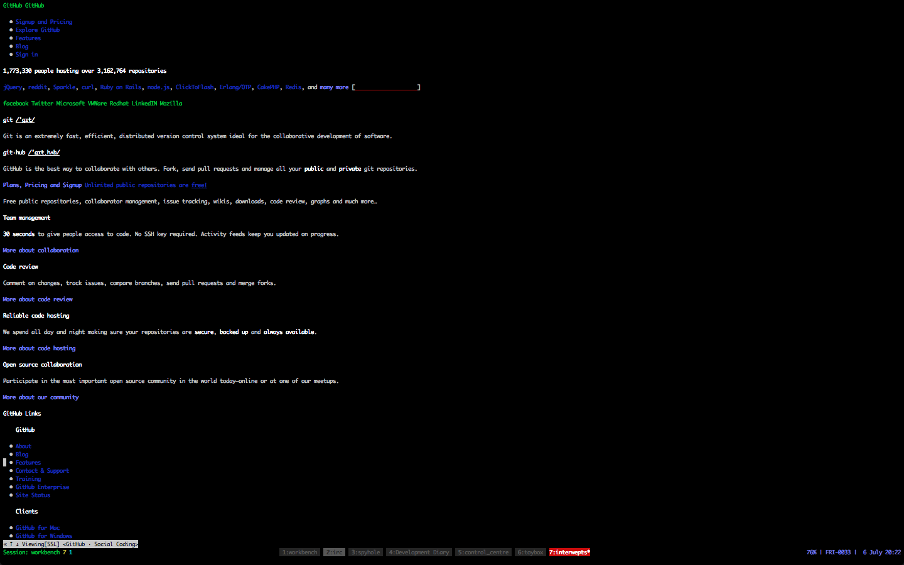
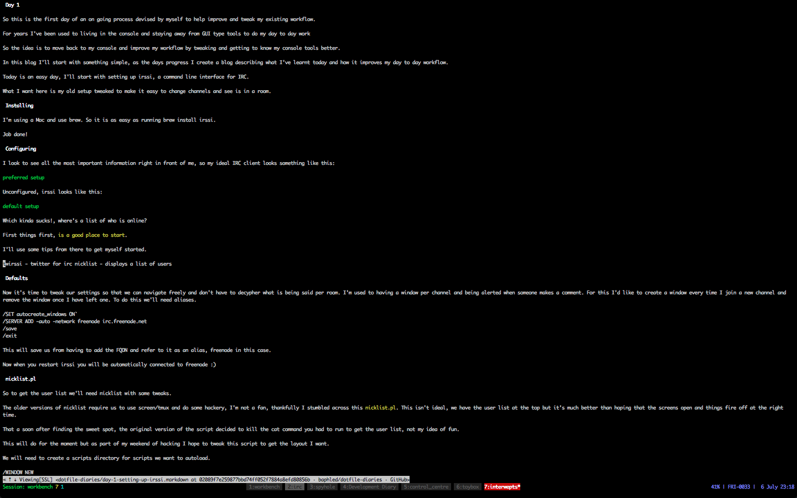

(c) 2012 Yomi Colledge
All rights reseved
No part of this publication may be reproduced, stored in a retrieval system, or transmitted, in any form, or by any means, electronic, mechanical, photocopying, recording, or otherwise, without the prior consent of the publisher.
The goal of this diary is to track the journey of improving my unix-fu and work flow.
I’ve come to love my current setup (tmux, oh-my-zsh, Vim, RVM and bundle). Setting up my environment may well get more complex so I’ll setup a script that will check whether these tools are available and install them if they are not.
Vim and oh-my-zsh are easy, I already have separate repositories for these. I’m going to be opinionated for the moment an focus on installing the other tools via brew and apt. I’ll check the OS and use the correct install recipe accordingly.
I’ll start off with a very basic workbench and build it up to the point where it it optimal for my personal use and configurable enough for others to do the same too.
TO BE WRITTEN
This will be a delve into move the my internet related information back into the console. I find it cumbersome to keep tabbing back and forth and trying to keep a mental note of how many times I need to tab to get where I want. In the terminal this can be manage a lot easier and at least allow me to set things up more like how I prefer things to be.
So this is the first day of an on going process devised by myself to help improve and tweak my existing work flow.
For years I’ve been used to living in the console and staying away from GUI type tools to do my day to day work
So the idea is to move back to my console and improve my work flow by tweaking and getting to know my console tools better.
In this blog I’ll start with something simple, as the days progress I create a blog describing what I’ve learnt today and how it improves my day to day work flow.
Today is an easy day, I’ll start with setting up irssi, a command line interface for IRC.
What I want here is my old setup tweaked to make it easy to change channels and see is in a room.
I’m using a Mac and use brew. So it is as easy as running brew install irssi.
Job done!
I like to see all the most important information right in front of me, so my ideal IRC client looks something like this:

Unconfigured, irssi looks like this:

Which kinda sucks!, where’s a list of who is online?
First things first, is a good place to start.
I’ll use some tips from there to get myself started.
twirssi - twitter for irc nicklist - displays a list of users
Now it’s time to tweak our settings so that we can navigate freely and don’t have to decypher what is being said per room. I’m used to having a window per channel and being alerted when someone makes a comment. For this I’d like to create a window every time I join a new channel and remove the window once I have left one. To do this we’ll need aliases.
/SET autocreate_windows ON` /SERVER ADD -auto -network freenode irc.freenode.net /save /exit
This will save us from having to add the FQDN and refer to it as an alias, freenode in this case.
Now when you restart irssi you will be automatically connected to freenode :)
So to get the user list we’ll need nicklist with some tweaks.
The older versions of nicklist require us to use screen/tmux and do some hackery, I’m not a fan, thankfully I stumbled across this nicklist.pl. This isn’t ideal, we have the user list at the top but it’s much better than hoping that the screens open and things fire off at the right time.
That a soon after finding the sweet spot, the original version of the script decided to kill the cat command you had to run to get the user list, not my idea of fun.
This will do for the moment but as part of my weekend of hacking I hope to tweak this script to get the layout I want.
We will need to create a scripts directory for scripts we want to autoload.
/WINDOW NEW /WINDOW NAME hilight /WINDOW MOVE up /WINDOW SIZE 10 /WINDOW stick /layout save
This will create a new window called hilight which will be displayed at the top be sticking 10 lines high, which means that it will stay in position regardless of changing channel windows.
Finally we make sure that our nick is highlighted with /hilight nick
We’ll leave this for now and come back to tweaking our settings later.
So I’ve in the previous posts I’ve setup irssi and setup twirssi so that I can keep up to date with my tweets without having to deal with a GUI.
Now I want to tweak my settings so that I can open links easily and have a few more channels setup in hidden windows.
I’d also like to setup vim-mode for irssi
Today I’ll be tweaking Irssi so that I can interact with my Instant Messager and twitter accounts.
I want to a way to handle links, their everywhere and their useful, to do this I’ll use bjurl.pl to highlight links and give me the ability to open and copy them.
I used this version of
bjurl. I’ll copy it to
the usual place (~/.irssi/scripts/autorun) we can than run the script and we
have a nicely highlighted URL’s :D
To open files we’ll need to do some more configuration, as I’m on a mac, I’ll download Lynx and get it to open in a new tmux window. We’ll setup our browser as lynx as it’s a command line browser.
So we’ve done quite a bit with our irc client in ways of centralising communicaions, wouldn’t it be cool if we could get our IM’s to play nicely too? Well it seems that it isn’t much of a problem.
We’ll download bitlbee and create a new window for it in our irssi client.
First, the download:
brew install bitlbee
Now we can connect to one of the bitlbee servers and get things setup.
/win new hidden /win name bitlbee /server im.uk.bitlbee.org 6667
This should automatically join you to the "&bitlbee" channel, this is where you’ll be able to setup your account and send messages :)
Once connected you’ll need to register and set a password
/register <username> /OPER
Once you have entered these commands you will be prompted to enter your password
All set? good, now we can start adding accounts
account add jabber <your gmail email address> /OPER
Now you can enter your IM’s password. Rince and repeat until you have added all your accounts.
Finally call account on bitlbee will connect you to all of your accounts :)
All accounts successfully connected to will be stored so the next time you connect to bitlbee all you need to do is run the following commands
/identify <username> /OPER
Once you enter your password you can then call account on and log into all IM’s
Simples :D
So for today, I’d like to stop using twitter and move it my console. I love Twitter but GUI’s are exceptionally slow and I’d like a lot more control over what I can see when and how it’s displayed.
For this we’ll use twirssi, recommended to me by @23me, who I used to spend a lot of time chatting on IRC with in my misspent youth.
So the first step is to download and setup the script and take it from there.
We’ll need to add the Net::Twitter from CPAN:
sudo perl -MCPAN -e 'install Net::Twitter' sudo perl -MCPAN -e 'install JSON::Any'
We’ll also need to run the script and pass our username:
/win new hidden /win name twitter /script load twirssi.pl /twitter_login username /twirssi_oauth <username>@Twitter <pin>
This will create a new hidden window call it twitter and load the script and finally set the username. You will then be asked to authorise the application by visiting the displayed link, once this is done, you should then be ready to use twitter via irssi :)
/layout save /save
Now you settings are saved we can happily close irssi knowing that our setup will still persist :D
For further customisation, checkout twirssi’s user guide
Now, where would we be if we didn’t have a favourite text editors key settings available in irssi.
That’d be heaven right, we’ll it’s pretty damn easy to get this going and to add your own mappings, which is wicked, though it’d be even better if we could just pull in our mappings from vim itself but that’s for another day.
For now we’ll just setup vim-mode for irssi, which is easy as hell, and get it setup so that we can take advantage of some of the key bindings I’ve gotten used to.
We’ll get that from here. We’ll also grab uberprompt which vim-mode depends on for some extra vim like functionality.
Once downloaded and added to your autorun directory we’re pretty much good to go. Run the following:
/run vim_mode
Then we should be good to go :)
The source file has heaps of information, much of which I’ve not had the chance to read through properly yet, on how to get started and set things up just how like. So take look at that and determine what is the best for you :)
For the lazy, like me, here’s what I’ve done so far to get started.
/statusbar window add vim_mode /statusbar window add vim_windows
We’ll want to save these changes
/layout save /save
This will help you to know when you are in Insert or Command mode.
There’s heaps of documentation on vim-mode via the source file, so delve in and start hacking. Admittedly I’d love it if it took my vim settings but hell, it’s not too much hassle to setup mapping for the most important things :)
At present these are the mappings that I’ve setup to get started with
map <C-H> <BS> map <Leader> , map <Leader>p :bprev map <Leader>n :bnext
I remapped the leader key to the ' as this is what I have setup in my vim. I
also setup :bprev `and `:bnext so that I can easily move around to the next
and previous windwos within irssi.
It would be nice to create a binding for specifying a window to navigate to but I’ll leave this for another time.
I could also setup bindings for navigating between split windows by adding the
below mappings to vim_moderc
map <C-h> <C-w>h map <C-j> <C-w>j map <C-k> <C-w>k map <C-l> <C-w>l
We’ll also want to add bingins for navigating. Irssi uses <ESC> # to navigate to a given window, as we have vim-mode setup <ESC> is used to change vim modes so we’ll need to remap these so that they would with the new setup.
MAPPING TO BE ADDED LATER
Making <esc> has been remapped we should be able to easily move around
windows without having to rely on our newly created <leader>p and <leader>n
keys.
So I’ve done quite a bit to get irssi setup and working as I want it. The last things I want to do is lose my settings or messing something up, as I have done a number of times already.
So the easy fix for this is to create a repository and pull the config in as dotirssi.
- There`s not much to this really.
- I copy the .irssi directory to dotirssi.
- I then initialised git for version control.
- Created a new repository on github
-
ignored files with the pattern
scripts/twirssi.* - Commited all the files
- pushed the changes
- added the project to my dotfiles using braid
- This will change some point in this process
-
Copy my twirssi auth files to
~/dotirssi/scripts
Once the above was done I was able to have my irssi settings up version control :)
Yet another day of tweaking my irssi rig, today I want to get Lynx to open in a new tmux window when I select a link. I’ll use tmux to do this as it’s what it’s good at and I’ll get bjurl to call tmux when ever I select a link for viewing.
Again the goal here is to move more of my work flow into my terminal which will allow me to deal with content when I choose.
First off we need to actually be able to easily see links and open them, we’ll use bjurl for this.
As with most plugins this is as simple as downloading the script and adding it to your irssi script directory.
If your already running irssi run /run bjurl.
As I’m using a mac, I needed to to set the browse_command settings to
open links just how I want it to.
First we need a new tmux window to start lynx in.
tmux new-window -t workbench -s interwepts
We’ll need tell bjurl to behave as we want:
/set browse_command tmux send-keys -t interwepts 'lynx $1' C-m
And that’s pretty much it for now, we can now load links within our current session :)
It would be cool if we had a separate session strictly for browsing, that way we don’t have to clutter the current session.
This and a few other things will be the next step for improving this work flow but lets take small steps and see where this path leads up :)
It would be cool if we could name our window accordingly and not have to deal with the many windows issue I have with chrome and many other browser at present. This only leads to a sluggish computer and "Tab overload"
I also need bjurl to be a bit smarter in identifying links, it’s hard to track links once 20 have been displayed, at present it’s quite useless.
So we’ve got Lynx setup to work with irssi, after doing so I found out that w3m can deal with tabs and images. Admittedly I’m not particularly a fan of tabs, mainly as I tend to build up quite a collection of these and never really go back to them, but I’ll give it a whirl and see what the pros and cons of it as opposed to lynx.
As always I used brew brew install w3m to get things rolling.
So this is what w3m looks like out of the box.

Off the bat the colours are all wrong, trying to red blue text is near impossible when using a black background, so that had to be changed.
The other issue was that though I still had my vim keys I could not use
<C-B> and <C-F> to move around, which is annoying, that’ll have to be
changed too.
Note
how do i change the binding?
I also couldn’t see URL’s at all.
I guess the first step is to work out how to customise w3m so that we can get those colours sorted and give it some vim love.
Ok, so changing the settings is quite easy to get to, simply press o
whilst having w3m open and the settings page will be displayed. We
simple need to scroll down to Colour Settings and specify the colours we desire.
Viewing links it’s just as easy as interacting with any other link so that’s cool :)
The only things that niggles me is not being able to set up leader key
The most important once for the moment are to page up and down quickly as the default mappings are quite a stretch.
Add the below to the keymap file within ~/.w3m gives me the ability to
do exactly this.
keymap F NEXT_PAGE keymap B PREV_PAGE
Now that w3m is setup a for navigating a little easier, I’ll swap out lynx for w3m.
/set browse_command tmux send-keys -t interwepts 'w3m $1' C-m
We’ll run with this for the moment as see how it fairs.

Before we commit this to version control, we’ll make some tweaks to the config file to make it less specific to a Mac.
Below is a snippet from my config that I should change, when on a different box, I probably won’t have brew installed and I prefer to have all my settings controlled locally so we wont need the references to the skeleton configs.
urimethodmap ~/.w3m/urimethodmap, /usr/local/Cellar/w3m/0.5.3/etc/w3m/urimethodmap
mailcap ~/.w3m/mailcap, /usr/local/Cellar/w3m/0.5.3/etc/w3m/mailcap
mime_types ~/.mime.types, /usr/local/Cellar/w3m/0.5.3/etc/mime.types
It now looks like this:
urimethodmap ~/.w3m/urimethodmap
mailcap ~/.w3m/mailcap
mime_types ~/.mime.types
So now we’re pretty much ready to play around with it for a while and take notes of things that I’d like to change.
I’d like to use mutt for dealing with my email, AppleMail is cool but it’s way too much for my liking and I’d prefer it if I could organise my emails without having to fiddle with sub folders manually.
I my old config this was done by using procmail to create/send emails to folders dependant on the source of the email.
This was pretty configurable so I’d like to get some of this back into my current setup so that I don’t get email overload :)
I had a better setup a while back but after rummaging around for ancient backups I decided to start from scratch.
Again, I’ll be using brew to get mutt installed brew install mutt
You’ll need to run the following commands:
mkdir -p ~/.mutt/cache/headers mkdir ~/.mutt/cache/bodies touch ~/.mutt/certificates
Next I needed to create a .muttrc file, to setup my GMail account. I
used this example
here to get things
started.
I had to make a few tweaks to get things just right. Firstly the order of the emails were newest at the bottom which is kind of annoying, I’d like to see my newest emails first, so this needs to be sorted.
We’ll hold out on that for the moment and customise the look of mutts, I stumbled upon this theme that works pretty well for the moment so I’ll go with that for now.
Now back to the matter at hand, how to get the sort order setup so that my newest emails are displayed first.
So I had to go into my muttrc file and make this changes
set sort_aux = 'reverse-date'
And make sure I also had the following in my config too:
set sort = 'threads'
Mutt is now setup, well enough to start playing around, I’ll work on integrating this into my workflow as time goes on.
The final things is to move this into it’s own repository for now, as I will be restarting my dotfiles from scratch once I have all these pieces setup.
I did what I usually do, created a git repo and moved my .muttrc file
to ~/.mutt/muttrc and then renamed the directory to dotmutt.
Once this was done I went through the motion of pushing the setting to a new repository.
I then used braid
braid add git://github.com/baphled/muttfiles.git dotmutt ln -s dotmutt .mutt ln -s .mutt/muttrc .muttrc
Then everything was setup as it where :)
- Improve the way I’m handling my email credentials
- Setup email alerts via the terminal
- Create screengrabs as I did with irssi
I’ve been writing quite a bit recently and have wanted to play around with git-scribe for authoring my diary and possibly writing projects in the future.
Today I’ll be setting up git-scribe and updating my diary so that I can generate content in various formats. Initially I’ll only publish this content as HTML but then move on to PDF and epub later once I’ve ironed out the kinks.
It’s not directly related but I love to write and I’d like my setup to allow me to easily write new material and publish them in various formats.
I’ve been watching git-scribe for some time and thought this would be a perfect time to bring it into my current workflow.
I’ll setup git-scribe as it allows me to write my entries in AsciiDoc format and compile it into a number of formats (html, pdf, mobi, etc).
As this is the case we’ll have a play with this setup and possibly use it for publishing other material.
There’s not much to this really the project has great documentation
Once installed I started initialised the new book.
git scribe init
Once this was done I had the basic setup needed to move my diary. git-scribe uses AsciiDoc to format content so I needed to convert the old markdown. That wasn’t so much trouble as there isn’t much different in the markup. I created a couple of vim macros and went through the pages and updated them accordingly. The main changes needed were related to the titles of each entry.
Once the files where moved into the book directory and the format of the
content was setup it was easy to generate the site with one command git scribe
gen site. In the output directory was the generated diary nicely formatted
and indexed.
- It would be nice to automatically resize images so that they are not too large or too small.
- create a script that generates my diary into HTML
- the output will be another repository
So I have a decent setup for browsing, communicating and writing.
Now I want to be able to fire off all of my tools in separate windows so that I can easily manage them and keep my work flow contained.
I already have tmux installed at present, though there will be a point when I start my dotfiles anew and will properly document the process.
For now I want to focus on how to automatically spawn a tmux session along with the default windows I use on a day to day basic.
I’m using tmux along with tmuxinator to help manage my setting.
Installing tmux is done simply by call brew install tmux once this has
been installed we are ready to play with tmux. As I mentioned I’m using
tmuxinator which is a ruby gem so we’ll add that to our Gemfile:
gem 'tmuxinator'
Running bundle install will install tmuxinator and then we are good to go.
Tmuxinator stores it’s configuration settings in the ~/.tmuxinator directory
but we can create a new setup my running mux create workbench. I’ve already
done this so I just ran mux open workbench to open the file in vim.
What I want here is a single session that setups up my perfect setup, allowing me to make the most of my terminal.
For this I’d like the following windows:
- Workbench
I’m often scawling notes of some kind so having a window to allow me to work with vim. So I want a window (Workbench) where I can interact with files via vim and have access to the console. This is where most of my actually work is done.
- IRC
I still want to be able to communicate with others and get topical information so I will want to use the irssi setup I’ve setup to allow me to keep my communications centralised.
- Spyhole
Tmux allows you to capture terminal output, I’d like to have a window that tails the log file and display any captured content. With tmux’s copy and paste functionality will can easily pull out captured content and use it in other places.
I still need my emails so having a window for that that I can quickly jump to when I feel to would be idea, Mutt is pretty lightweight and I’m sure I can set it up so automatically check for new emails, though procmail.
- Control Centre
I like to know if there are any changes that to my dotfiles master branch,
ideally this should be a panel in a window, for now this is be another stand
alone window that periodically calls git wtf to check for changes.
- Toybox
I like o have a ruby repl that I can play around with and test out ideas. I’ve been playing around with pry a bit recently so I’d like to have a window open that allows me to test out ideas before I hack away at a solution.
- Interwepts
As we have irssi setup to open a browser, we setup this window so that irssi can open w3m for us.
Now I know what I want in regards of session setup, lets open up my workbench config file and make this set up, all we need to do is update of config and fire up the new session.
project_name: workbench
project_root: ~/
rvm: 1.9.2-head@workbench
pre: cd ~/ && bundle
tabs:
- Workbench:
layout: b147,208x73,0,0[208x62,0,0,208x10,0,63{104x10,0,63,103x10,105,63}]
panes:
- vim
- #empty, will just run plain zsh
- Interwepts: w3m http://google.com
- IRC: irssi
- Email: mutt
- Spyhole: tail -f ~/workbench.log
- "Dotfile Diaries": vi ~/Documents/Diary
- 'Control centre': git wft
- Toybox: pry
Now with this setup, we can simple run mux workbench and tmuxinator will
handle the rest, creating and setting up each of my desired windows along with their separate tasks :)
I won’t go into detail about my mappings and my config, as it can be
here, and I’d like
to leave a broader explaination when I starting tinkering with ~/tmux.conf.